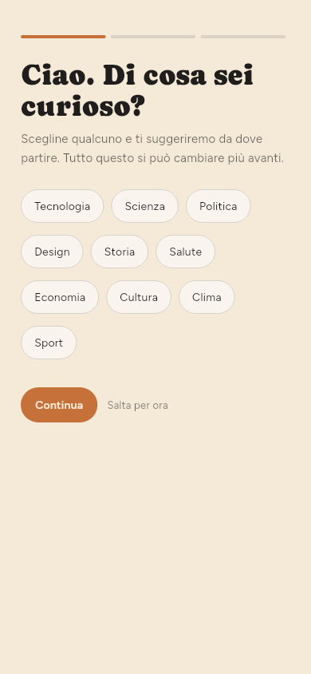
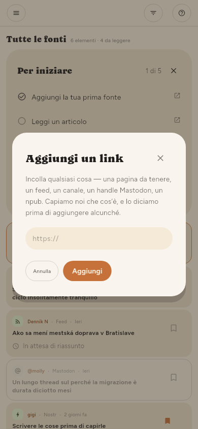
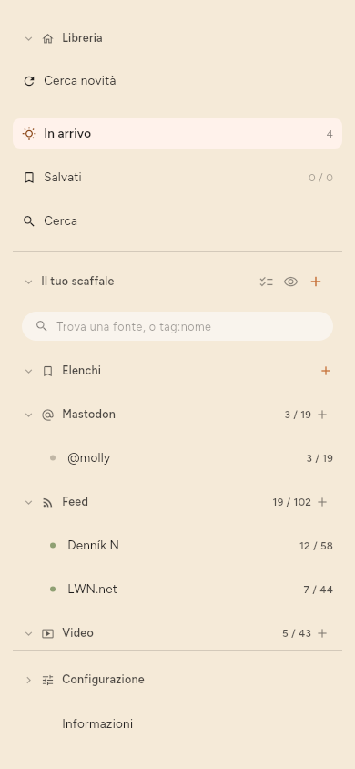
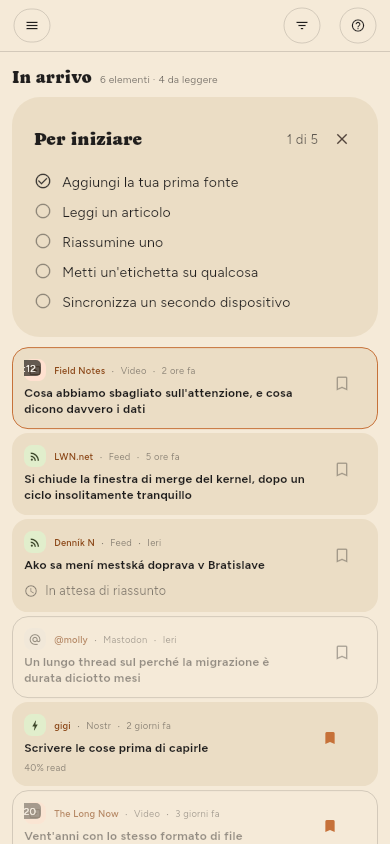
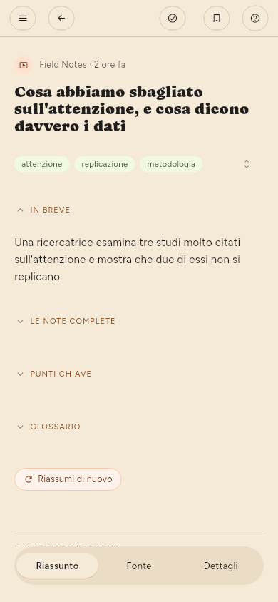
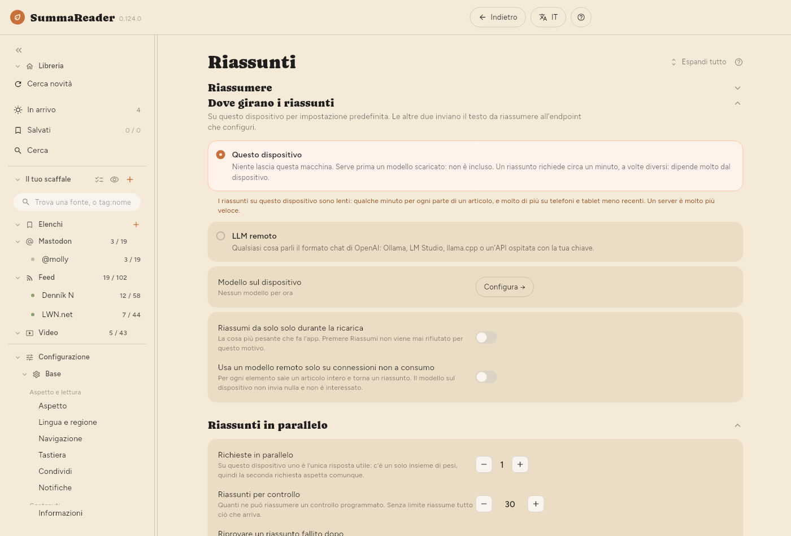
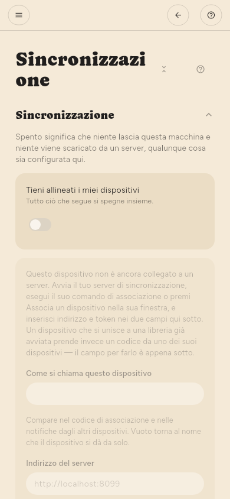
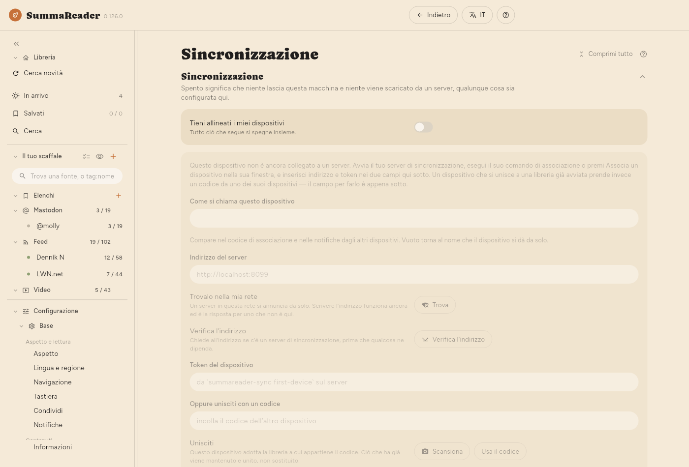

← Installazione · Indice · Per cominciare →
Primi passi
Questi passaggi sono gli stessi su telefono e su computer, salvo dove un passaggio indica altrimenti. L’elenco Per iniziare in cima a In arrivo segue gli stessi passaggi e li spunta uno a uno. Premi × per chiuderlo.
Su un telefono, lo schermo è troppo stretto per mostrare più di una cosa alla volta:
- Lo scaffale è l’elenco di tutto ciò che segui, più In arrivo, Salvati, Cerca e Configurazione. Su un telefono è nascosto. Tocca ☰ in alto a sinistra per aprirlo.
- Un articolo si apre a schermo intero. Tocca ← per tornare all’elenco.
- Configurazione è in fondo allo scaffale. Toccala, poi Base o Avanzate, poi una pagina.

Su un computer, lo scaffale è sempre a sinistra e un articolo si apre accanto all’elenco.
1. Aggiungi la tua prima fonte
Una fonte è qualsiasi cosa l’app segua per te: il feed di un sito di notizie, un canale video, un account Mastodon. Un feed è l’elenco dei nuovi articoli che un sito pubblica per programmi come questo.
La prima volta che apri l’app, ti chiede che cosa ti incuriosisce.
- Tocca gli argomenti che ti interessano, poi tocca Continua.
- Tocca una fonte suggerita per seguirla, oppure incolla nella casella l’indirizzo di un sito o di un canale e tocca Aggiungi. Poi tocca Continua.
- Seleziona Riassumi ciò che leggo per lasciare che l’app scriva i riassunti, oppure lascialo deselezionato. Puoi cambiarlo più tardi (passaggio 4).
- Tocca Inizia a leggere.
Per aggiungere le fonti più tardi, tocca invece Salta per ora nella prima schermata.

Per aggiungere una fonte in qualsiasi momento:
- Apri lo scaffale.
- Tocca + accanto a Il tuo scaffale. Si apre la casella Aggiungi un link.
- Incolla l’indirizzo.
- Tocca Aggiungi.
- Se il sito offre una scelta, seleziona il feed o la pagina stessa. L’app ne indica una come consigliata.


2. Cerca nuovi articoli
L’app controlla le tue fonti secondo una pianificazione. Per controllare subito:
- Apri lo scaffale.
- Tocca Cerca novità, sotto Libreria.
I nuovi articoli finiscono in In arrivo.
Per fermare un controllo, tocca Ferma nella barra di stato in basso. Il pulsante diventa Mi fermo…. In ogni fonte, l’app finisce l’articolo che sta leggendo. Non avvia le fonti in attesa. Gli articoli già scaricati restano. Il controllo successivo parte dalle fonti che non ha finito.

Per cambiare la frequenza dei controlli: Configurazione › Base › Scaricamento › Ogni quanto controllare. Solo quando lo chiedo ferma tutti i controlli automatici.
Il primo controllo prende gli articoli che la fonte ha in quel momento. Per te non sono nuovi, quindi l’app non li riassume automaticamente. Riassume solo gli articoli che arrivano dopo che hai aggiunto la fonte.
3. Leggi un articolo
- Tocca un articolo in In arrivo.
- Leggilo. L’articolo ha tre schede in basso: Riassunto, Fonte (il testo completo) e Dettagli.
- Su un telefono, tocca ← per tornare all’elenco.



4. Attiva i riassunti e scegli dove girano
Un riassunto lo scrive un modello: un programma che legge l’articolo e ne scrive una versione breve. Il modello gira in uno di due posti.
- Questo dispositivo: il modello gira sul telefono o sul computer. Niente esce dal dispositivo. Scarichi il modello una sola volta. I riassunti su questo dispositivo sono lenti: qualche minuto per ogni parte di un articolo, e molto di più su telefoni e tablet meno recenti.
- LLM remoto: l’articolo va a un server che fa girare il modello: uno gestito da te o un servizio a pagamento. Un server è molto più veloce. È l’unico caso in cui il testo di un articolo esce dal tuo dispositivo.
Per configurarlo:
- Apri Configurazione › Base › Riassunti › Riassumere › Riassunto e verifica che sia attivo.
- In Configurazione › Base › Riassunti › Dove girano i riassunti, seleziona Questo dispositivo o LLM remoto. La prima volta che selezioni Questo dispositivo, l’app ti avvisa che qui i riassunti sono lenti. I riassunti proseguono in background mentre leggi.
- Per Questo dispositivo: apri Configurazione › Avanzate › Modello sul dispositivo › Trova un modello, cerca e scarica un modello. Poi, in Configurazione › Avanzate › Modello sul dispositivo › Modelli su questo dispositivo, tocca Avvia accanto al modello.
- Per LLM remoto: apri Configurazione › Avanzate › Server LLM › Server LLM. Compila Indirizzo, Modello e, se il server la richiede, la chiave API. Tocca Prova.
- Apri un articolo e tocca Riassumi.


In Premium, l’app può anche riassumere automaticamente i nuovi articoli, dopo ogni controllo. Attiva Riassumi nelle impostazioni di una fonte (vedi Gestire le fonti).
5. Metti un’etichetta e conserva in un elenco (solo Premium)
Etichette ed elenchi sono in Premium.
Un’etichetta è una parola che metti su un articolo o su una fonte, per esempio linux. Il riassunto suggerisce delle etichette.
- Apri un articolo.
- Sotto il titolo, tocca un’etichetta suggerita per accettarla, oppure tocca la matita (Modifica etichette) per scriverne una tua.
Un elenco tiene insieme degli articoli. Salvati è il primo elenco.
- Apri un articolo.
- Tocca il segnalibro in alto per salvarlo nell’elenco attuale.
- Per usare un altro elenco, tieni premuto il segnalibro, poi seleziona un elenco o creane uno nuovo.
6. Abbina un secondo dispositivo
La sincronizzazione tiene allineati i tuoi dispositivi: ciò che leggi, ciò che salvi e gli articoli stessi. Serve un server di sincronizzazione gestito da te. Il server conserva solo dati cifrati e non può leggere la tua libreria.
Scarica il server dalla sua pagina delle versioni; Procurarsi il server dice quale file prendere.
Sul primo dispositivo:
- Apri Configurazione › Avanzate › Sincronizzazione › Sincronizzazione.
- Attiva Tieni allineati i miei dispositivi.
- Compila Indirizzo del server e Token del dispositivo. Il server ti fornisce entrambi.
- In Configurazione › Avanzate › Sincronizzazione › Un altro dispositivo, tocca Crea un codice. L’app mostra un codice QR e lo stesso codice come testo.
Sul secondo dispositivo:
- Installa l’app e apri Configurazione › Avanzate › Sincronizzazione › Sincronizzazione.
- Attiva Tieni allineati i miei dispositivi.
- Sotto Oppure unisciti con un codice, tocca Scansiona e inquadra il codice QR con la fotocamera. Su un dispositivo senza fotocamera, incolla il codice di testo nel campo. Su Linux, una webcam può scansionare il codice.
- Tocca Usa il codice.
Il codice contiene la chiave della tua libreria. Mostralo solo a un tuo dispositivo e chiudilo quando hai finito.


7. Crea il codice di recupero
Il codice di recupero è l’unico modo per rientrare nella tua libreria se perdi tutti i dispositivi abbinati. Nessuno può ricrearlo per te.
- Apri Configurazione › Avanzate › Sincronizzazione › Chiave di recupero › Codice di recupero.
- Tocca Crea.
- Annota il codice. Conservalo in un posto che puoi raggiungere anche se questo dispositivo non c’è più. L’app lo mostra una sola volta e non ne tiene una copia.